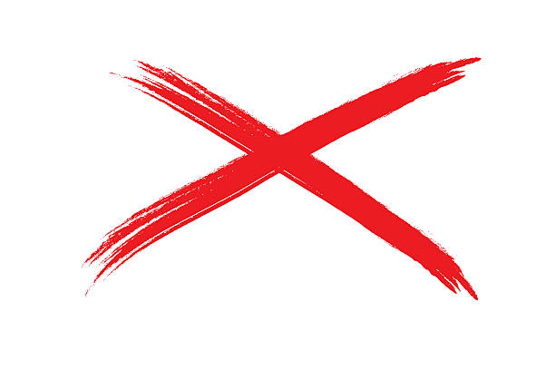
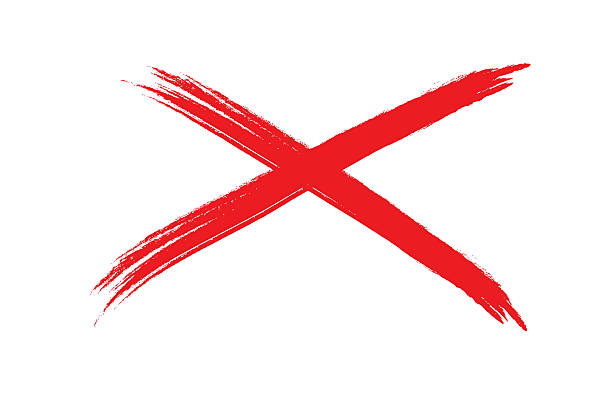

HISTÓRICO Política Em 1988 entrou na vida pública elegendo-se vereador da cidade do Rio de Janeiro pelo Partido Democrata Cristão. Nas eleições de 1990 elegeu-se deputado federal pelo mesmo partido. Viriam em seguida outros quatro mandatos sucessivos. Inicialmente, Bolsonaro não via a si mesmo como representante do espectro ideológico de direita, Bolsonaro chegou a ocupar a tribuna da Câmara, em 12 de março de 1999, para tecer elogios à deputada federal Luiza Erundina, então no PSB e sempre reconhecida como um quadro de esquerda. "Aproveito a oportunidade para, de público, agradecer a Vsa. Exa, deputada Luiza Erundina, pelo que já fez pela classe militar das Forças Armadas enquanto esteve à frente da administração. Tenha a certeza de que não nos esquecemos (...). Na vida pública, precisamos de gente como V. Exa., que olha para todos como brasileiros, independente de estarem fardados ou não (...)" Mais tarde, ficou conhecido por suas ideias nacionalistas, conservadoras e por suas críticas ao comunismo e à esquerda. Bolsonaro defende abertamente o regime militar instalado no Brasil em abril de 1964. Bolsonaro foi titular da Comissão de Relações Exteriores e de Defesa Nacional e da Comissão de Segurança Pública e Combate ao Crime Organizado, além de ter sido suplente da Comissão de Direitos Humanos e Minorias da Câmara dos Deputados. Além do PDC, foi filiado a outros oito partidos ao longo de sua carreira política: PPR (1993-95), PPB (1995-2003), PTB (2003-2005), PFL (2005), PP (2005-2016), PSC (2016-2017) e o PSL (2018). Bolsonaro afirmou que já pensou em se filiar ao Prona, e em 2017, chegou a conversar sua filiação com o PEN, o que não ocorreu. Desempenho eleitoral Nas eleições de 2010, Jair Bolsonaro obteve cerca de 120 mil votos, sendo o décimo-primeiro deputado federal mais votado do estado do Rio de Janeiro. Em seu mandato anterior se destacou na luta pela aprovação da PEC 300 e contra uma possível volta da CPMF (Contribuição Provisória sobre Movimentações Financeiras). É representante de parcela das Forças Armadas brasileiras na Câmara dos Deputados e defende recomposição salarial dos militares. Reelegeu-se em 2014, como o deputado federal mais votado do Rio de Janeiro com 464 572 votos. Em fevereiro de 2017 Bolsonaro concorreu pela terceira vez ao cargo de presidente da Câmara dos Deputados, obtendo apenas quatro votos. Ele já disputara o mesmo cargo em 2005 e 2011, tendo sido derrotado em todas essas tentativas. Economia Bolsonaro defendeu, durante os governos de Fernando Henrique Cardoso e Luiz Inácio Lula da Silva, posições econômicas desenvolvimentistas, herança da ditadura militar no Brasil, votando junto com o Partido dos Trabalhadores em diversos temas econômicos. Em 2000, ao explicar ao apresentador Jô Soares por que defendeu o fuzilamento do então presidente Fernando Henrique, disse que "barbaridade é privatizar a Vale e as telecomunicações, entregar as nossas reservas petrolíferas ao capital externo". Por outro lado, desde 2016, Bolsonaro tem apoiado medidas econômicas liberais. Votou na abertura do pré-sal, afirmou que o "livre-mercado é a mãe da liberdade", e, em uma entrevista, disse que "deve ser privatizado o máximo que puder" e que se opôs somente a forma como a Vale foi privatizada. Em uma entrevista à jornalista Mariana Godoy, quando questionado sobre seu posicionamento em relação ao tripé macroeconômico, o então pré-candidato à presidência respondeu que quem falaria sobre economia por ele no futuro seria a sua equipe econômica. Em novembro de 2017, durante uma entrevista, Bolsonaro disse que caso se torne presidente do Brasil, nomeará para o ministério da fazenda o economista liberal Paulo Guedes. Em maio de 2018, defendeu a flexibilização de direitos trabalhistas e afirmou: "Aos poucos a população vai entendendo que é melhor menos direitos e emprego do que todos os direitos e desemprego". Democracia, Estado laico e ditadura militar Em uma entrevista para a revista Veja em 2 de dezembro de 1998, o parlamentar afirmou que a ditadura chilena de Augusto Pinochet, que matou mais de 3.000 pessoas e exilou outras 200.000, "devia ter matado mais gente". Ele também elogiou o presidente peruano Alberto Fujimori como um "modelo" pelo uso de uma intervenção militar contra o judiciário e o legislativo. Em 1999, o deputado afirmou ao programa "Câmera Aberta" que era "favorável à tortura" e chamou a democracia de "porcaria". Se fosse presidente do país, respondeu que não havia "a menor dúvida" de que "fecharia o Congresso" e de que "daria um golpe no mesmo dia". Na mesma época, ao explicar ao apresentador Jô Soares por que defendeu o fuzilamento do então presidente Fernando Henrique Cardoso (PSDB), ele disse que "barbaridade é privatizar a Vale e as telecomunicações, entregar as nossas reservas petrolíferas ao capital externo". Visões políticas Abaixo estão as principais visões políticas de Jair Bolsonaro: União de pessoas do mesmo sexo Privatizações Pena de morte Golpe militar de 1964 Cotas raciais Legalização das drogas Reforma agrária Estado laico Prisão perpétua Legalização do aborto Redução da maioridade penal Imigrantes Partido PSL (2018–presente) PSC (2016–2018) PP (2005–2016) PFL (2005–2005) PTB (2003–2005) PPB (1995–2003) PPR (1993–1995) PP (1993–1993) PDC (1989-1993)
Política Em 1988 entrou na vida pública elegendo-se vereador da cidade do Rio de Janeiro pelo Partido Democrata Cristão. Nas eleições de 1990 elegeu-se deputado federal pelo mesmo partido. Viriam em seguida outros quatro mandatos sucessivos. Inicialmente, Bolsonaro não via a si mesmo como representante do espectro ideológico de direita, Bolsonaro chegou a ocupar a tribuna da Câmara, em 12 de março de 1999, para tecer elogios à deputada federal Luiza Erundina, então no PSB e sempre reconhecida como um quadro de esquerda. "Aproveito a oportunidade para, de público, agradecer a Vsa. Exa, deputada Luiza Erundina, pelo que já fez pela classe militar das Forças Armadas enquanto esteve à frente da administração. Tenha a certeza de que não nos esquecemos (...). Na vida pública, precisamos de gente como V. Exa., que olha para todos como brasileiros, independente de estarem fardados ou não (...)" Mais tarde, ficou conhecido por suas ideias nacionalistas, conservadoras e por suas críticas ao comunismo e à esquerda. Bolsonaro defende abertamente o regime militar instalado no Brasil em abril de 1964. Bolsonaro foi titular da Comissão de Relações Exteriores e de Defesa Nacional e da Comissão de Segurança Pública e Combate ao Crime Organizado, além de ter sido suplente da Comissão de Direitos Humanos e Minorias da Câmara dos Deputados. Além do PDC, foi filiado a outros oito partidos ao longo de sua carreira política: PPR (1993-95), PPB (1995-2003), PTB (2003-2005), PFL (2005), PP (2005-2016), PSC (2016-2017) e o PSL (2018). Bolsonaro afirmou que já pensou em se filiar ao Prona, e em 2017, chegou a conversar sua filiação com o PEN, o que não ocorreu.
Desempenho eleitoral Nas eleições de 2010, Jair Bolsonaro obteve cerca de 120 mil votos, sendo o décimo-primeiro deputado federal mais votado do estado do Rio de Janeiro. Em seu mandato anterior se destacou na luta pela aprovação da PEC 300 e contra uma possível volta da CPMF (Contribuição Provisória sobre Movimentações Financeiras). É representante de parcela das Forças Armadas brasileiras na Câmara dos Deputados e defende recomposição salarial dos militares. Reelegeu-se em 2014, como o deputado federal mais votado do Rio de Janeiro com 464 572 votos. Em fevereiro de 2017 Bolsonaro concorreu pela terceira vez ao cargo de presidente da Câmara dos Deputados, obtendo apenas quatro votos. Ele já disputara o mesmo cargo em 2005 e 2011, tendo sido derrotado em todas essas tentativas.
Economia Bolsonaro defendeu, durante os governos de Fernando Henrique Cardoso e Luiz Inácio Lula da Silva, posições econômicas desenvolvimentistas, herança da ditadura militar no Brasil, votando junto com o Partido dos Trabalhadores em diversos temas econômicos. Em 2000, ao explicar ao apresentador Jô Soares por que defendeu o fuzilamento do então presidente Fernando Henrique, disse que "barbaridade é privatizar a Vale e as telecomunicações, entregar as nossas reservas petrolíferas ao capital externo". Por outro lado, desde 2016, Bolsonaro tem apoiado medidas econômicas liberais. Votou na abertura do pré-sal, afirmou que o "livre-mercado é a mãe da liberdade", e, em uma entrevista, disse que "deve ser privatizado o máximo que puder" e que se opôs somente a forma como a Vale foi privatizada. Em uma entrevista à jornalista Mariana Godoy, quando questionado sobre seu posicionamento em relação ao tripé macroeconômico, o então pré-candidato à presidência respondeu que quem falaria sobre economia por ele no futuro seria a sua equipe econômica. Em novembro de 2017, durante uma entrevista, Bolsonaro disse que caso se torne presidente do Brasil, nomeará para o ministério da fazenda o economista liberal Paulo Guedes. Em maio de 2018, defendeu a flexibilização de direitos trabalhistas e afirmou: "Aos poucos a população vai entendendo que é melhor menos direitos e emprego do que todos os direitos e desemprego".
Democracia, Estado laico e ditadura militar Em uma entrevista para a revista Veja em 2 de dezembro de 1998, o parlamentar afirmou que a ditadura chilena de Augusto Pinochet, que matou mais de 3.000 pessoas e exilou outras 200.000, "devia ter matado mais gente". Ele também elogiou o presidente peruano Alberto Fujimori como um "modelo" pelo uso de uma intervenção militar contra o judiciário e o legislativo. Em 1999, o deputado afirmou ao programa "Câmera Aberta" que era "favorável à tortura" e chamou a democracia de "porcaria". Se fosse presidente do país, respondeu que não havia "a menor dúvida" de que "fecharia o Congresso" e de que "daria um golpe no mesmo dia". Na mesma época, ao explicar ao apresentador Jô Soares por que defendeu o fuzilamento do então presidente Fernando Henrique Cardoso (PSDB), ele disse que "barbaridade é privatizar a Vale e as telecomunicações, entregar as nossas reservas petrolíferas ao capital externo".
Visões políticas Abaixo estão as principais visões políticas de Jair Bolsonaro: União de pessoas do mesmo sexo Privatizações Pena de morte Golpe militar de 1964 Cotas raciais Legalização das drogas Reforma agrária Estado laico Prisão perpétua Legalização do aborto Redução da maioridade penal Imigrantes Partido PSL (2018–presente) PSC (2016–2018) PP (2005–2016) PFL (2005–2005) PTB (2003–2005) PPB (1995–2003) PPR (1993–1995) PP (1993–1993) PDC (1989-1993)